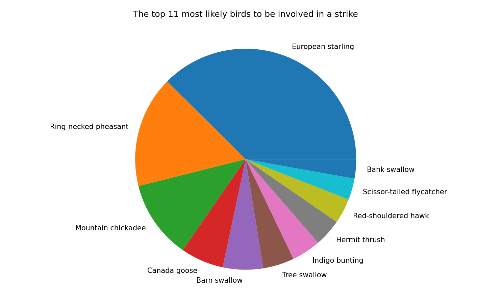
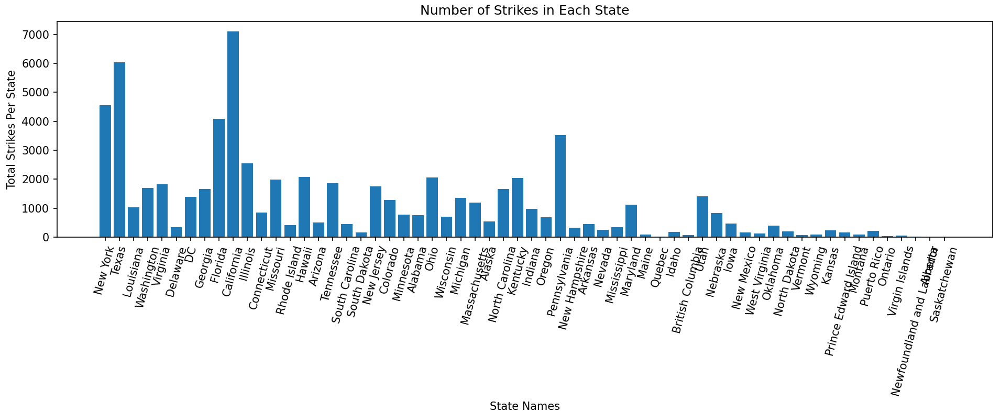
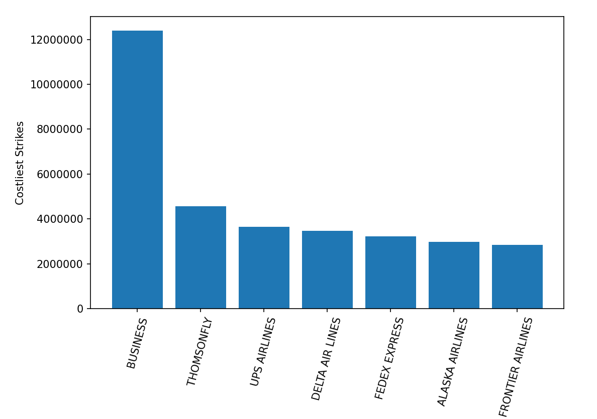

Computer Science Project 2025
Exam Number:258530
BR Page
 Pie Chart showing the top 11 (User input was 1 in the python shell) most common bird breeds to be involved in a strike - Create a duplicate free list of all the breed names("WildlifeSpecies" column) in the dataset (omitting the unknown breed entries) and then inside a for loop, sum up the total number of strikes for each one ("NumberStruckActual" column) and add to a fresh CSV (temp_bird_data.csv) the breed and its respective total beside it (BR1, b). The created CSV is then read back in with a permenant list being made of the breeds and strike totals. Now, the value for "n" is taken from the user and simply the strike total list is sorted from largest to smallest and using the index positions of the first n values of the sorted list in the unsorted list, a pie chart can be made by plotting the strike totals against the breed name for each total
 Bar Chart showing the total number of strikes in each state (Dataset pertains only to the United States) - Alike the breeds, a duplicateless list of the state names is made ("OriginState" column)and another list containing the total strikes for each is made("NumberStruckActual" column). These are then plotted against one another on a bar chart
 Bar Chart showing the top 7 most expensive strikes in the dataset (User input was 7 in the python shell) - Take the "Cost" column and sort it to find the most expensive ones. Then find the index position of each one (taking in the list of strikes equal to the number the user inputted) using the unsorted list to ultimately find the airline each one happened to ("Operator" column). These are then plotted on the graph